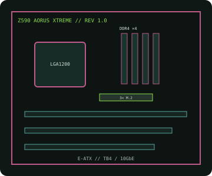

[ INDIVIDUAL COMPONENT // MOTHERBOARDS ]
GIGABYTE Z590 AORUS XTREME (rev. 1.0)
E-ATX LGA1200 Z590 flagship with DDR4, multi-slot PCIe, triple M.2 storage, 10GbE-class networking and integrated Thunderbolt 4.

IDENTIFICATION: Exact model/revision is Z590 AORUS XTREME rev. 1.0. Match the PCB marking and this board-specific support page before firmware or repair work.
Specifications
| Exact board / revision | GIGABYTE Z590 AORUS XTREME, rev. 1.0 |
|---|---|
| Socket / chipset / CPU | LGA1200, Intel Z590 Express; 10th/11th Gen Intel Core desktop CPUs listed for this revision. 11th Gen support and minimum BIOS are CPU-specific. |
| Form factor | E-ATX, approximately 305 × 285 mm; confirm case and standoff compatibility. |
| Memory | Four dual-channel DDR4 DIMMs, up to 128 GB unbuffered non-ECC. Validate XMP speed and rank/population in the CPU and memory QVL. |
| PCI Express | Three x16-length slots; primary CPU slot supports PCIe 4.0 with 11th Gen and PCIe 3.0 with 10th Gen. CPU/chipset lanes and multi-card modes are detailed in the rev. 1.0 manual. |
| Storage | Three M.2 sockets and six SATA 6 Gb/s ports; socket generation/protocol and SATA sharing depend on CPU and drive population. |
| Networking / I/O | 10GbE plus 2.5GbE wired LAN, Wi-Fi 6E/BT, dual rear Thunderbolt 4 USB-C and USB 3.2 connectivity. |
| BIOS / compatibility | Use the rev. 1.0 CPU list, BIOS package and board manual; never infer firmware support from another Z590 board. |
Compatibility and service notes
Use only LGA1200 processors enumerated by GIGABYTE for rev. 1.0. 10th Gen CPU PCIe capability differs from 11th Gen, affecting the primary slot and CPU-attached storage. Follow the DDR4 population order and consult the manual for M.2/SATA sharing and E-ATX clearance.
Before service, document the silkscreen revision and BIOS ID. Use ESD-safe handling and a firmware image explicitly assigned to this board.
Manufacturer sources
- GIGABYTE — Z590 AORUS XTREME rev. 1.0 specificationsOfficial product specifications and manual.
- GIGABYTE — rev. 1.0 CPU support, BIOS and manualsVerify processor qualification and required firmware.